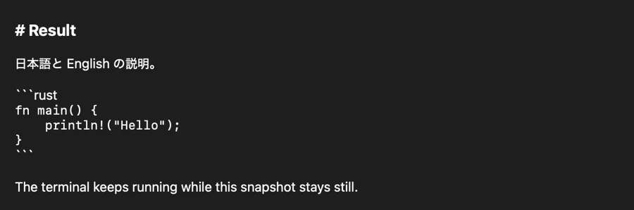
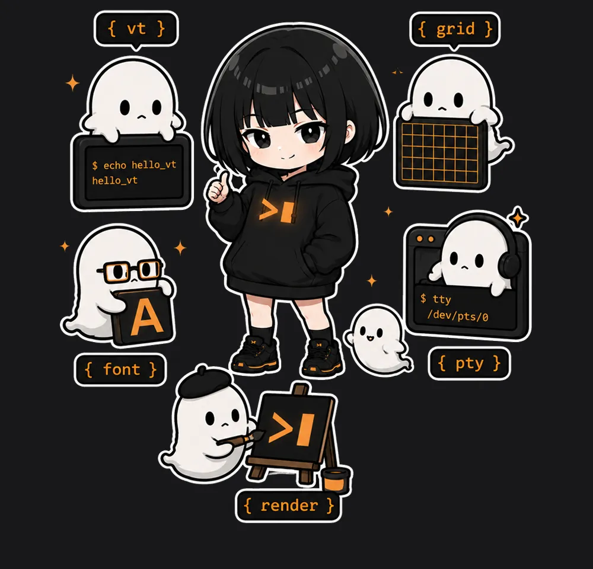
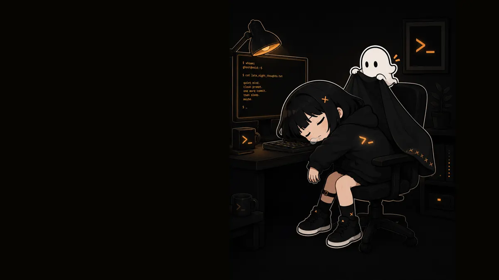

01 Spawn into worktrees
spawn --worktree starts a worker in its own git worktree on branch orch/<label>. close --prune removes the worktree and branch afterwards, and never forces it.
v0.9.4 GPU terminal · Rust · macOS & Linux · MIT
Noa is a GPU-accelerated terminal emulator, built independently in Rust and aiming for Ghostty compatibility. Feed it cat huge.log, a CI stream, or a board of up to twenty coding agents. It keeps the output moving and puts the agent that needs you on top.
brew tap simota/noa https://github.com/simota/Noa.git
brew install --cask simota/noa/noa
orchestratorclaude · main
$ noa() { "$NOA_BIN" +ctl "$@"; } $ noa spawn --worktree --tier deep --label vt-parser -- claude {"paneId":"12","worktree":"~/src/Noa-wt/vt-parser","branch":"orch/vt-parser"} $ noa spawn --worktree --tier standard --label cjk-reflow -- codex {"paneId":"13","worktree":"~/src/Noa-wt/cjk-reflow","branch":"orch/cjk-reflow"} $ noa spawn --worktree --tier light --label linux-ci -- agy {"paneId":"14","worktree":"~/src/Noa-wt/linux-ci","branch":"orch/linux-ci"} $ noa wait --children --stall 120 {"paneId":"12","reason":"permission","state":"permission"} $
Noa +ctl board5 workers
! approval 1 · vt-parser · claude · orch/vt-parser
new in 0.9 Noa +ctl · agent orchestration
An orchestrator, whether an agent or a script, spawns worker panes running Claude Code, Codex, agy or any command. It types prompts into them, waits on their reported state, reads their output and closes them. Workers live in floating panes stowed on the board, so the orchestrator's own pane stays clear.
spawn --worktree starts a worker in its own git worktree on branch orch/<label>. close --prune removes the worktree and branch afterwards, and never forces it.
--tier light|standard|deep picks the model and effort of a claude, codex or agy worker, so a quick lint pass doesn't cost what a deep refactor does.
Claude Code, Codex and agy report their state through OSC 7501, with no hooks needed. wait returns when a worker finishes, asks for permission or input, errors or exits. --stall catches one that went quiet.
send refuses a pane whose agent waits on an approval, checking before typing and again before Enter. To answer the dialog on purpose, pass --answer.
A worker can start workers of its own, one level deep. They're drawn under it as a tree, Space folds the subtree, and closing a worker closes the ones it started.
Numbers pick a worker, n jumps to the next one that needs you and ? shows the keys. Every state has a mark that reads without colour, and the board speaks English, or Japanese in a Japanese locale.
Turn on the control server that +ctl talks to:
# ~/.config/noa/config
server-enable = true
server-scopes = read,control,inputThen, from inside the orchestrator's pane:
noa() { "$NOA_BIN" +ctl "$@"; }
pane=$(noa spawn --label tests -- claude | jq -r .paneId)
noa send "$pane" --enter --wait --timeout 540 --tail 40 "Fix the failing test in crates/noa-vt"
noa read "$pane" --scrollback --max-bytes 65536
noa close "$pane"Each command prints one JSON object per line. Every pane's environment carries NOA_BIN, the path of the running Noa. Read the agent workflow guide.


Throughput
"Fastest" means one specific thing here: sustained output throughput and bulk scrolling. Build logs, cat huge.log, CI streams. Parsing and rendering spread across cores under load, so when the output floods in, Noa spends the hardware to stay ahead of it.
bench/run_all.sh.render.throughput
220–233 MB/s
All three workloads land in one band. Five-run median.
$ cat 進捗.md ## 今日の作業 - 宽字符渲染: 完成 - 한글 입력 테스트: 통과 - 絵文字 👩💻 🇯🇵 👍🏽 1️⃣ $ echo "にほんご" | wc -m 5 $ へんかん
CJK is in the same band as plain ASCII, and the fastest of the three. It isn't the slow path, so there's nothing to plan around.
=> != && -> via liga / caltCompatibility
Noa aims for the observable behavior of Ghostty: the same key = value config and keybind syntax, the same theme catalog, and Ghostty's GTK keybindings on Linux. It's an independent reimplementation that contains no Ghostty source code.
# Homebrew install in /Applications
/Applications/Noa.app/Contents/MacOS/Noa --import-ghostty-config
# from a source checkout
cargo run -p noa -- --import-ghostty-configSupported settings and keybind lines are copied unchanged. Anything Noa doesn't support is kept as a comment, and an existing Noa config is never overwritten.
Release 0.7.0 brought Noa in line with Ghostty 1.4.0.
Where it stands: parity is protected by fixture-based regression tests today. Automated differential comparison against Ghostty is still planned, and some advanced behavior may still differ.
Every Ghostty theme is bundled and picked by name. theme = Noa is built from the mascot's palette: charcoal, Ember white and a single orange accent on the cursor and ANSI yellow.
Preview themes in the settings overlay (⌘,), which writes back to your config. Edits to the file reload while Noa runs.
Platforms & automation
Native tabs and menus, a global-hotkey quick terminal, a scratch terminal, floating panes, Quick Look word lookup, secure keyboard entry, and an AppleScript dictionary that covers Ghostty 1.3's.
Apple Silicon · macOS 13 or later
X11 and Wayland. Ghostty's GTK keybindings are the defaults: ctrl+shift+c / v to copy and paste, ctrl+shift+t for a tab, ctrl+shift+p for the palette. Vulkan, or OpenGL ES as a fallback.
macOS-only pieces such as the menu bar, Ember and AppleScript are absent. The Linux guide lists them.
noa-serverJSON-RPC over WebSocket with token auth and read, input and manage scopes. Read pane text, send input, subscribe to pane output, or attach a pane as a raw VT stream.
{"jsonrpc":"2.0","id":3,
"method":"noa.getText",
"params":{"paneId":"1",
"source":"scrollback",
"maxBytes":65536}}minimum-contrast floorHow it's built
No testimonials or star counts here. Here's what you can check yourself.
noa-vt) and the terminal state model (noa-grid) have no windowing dependencies, so they're testable without a window or a GPU.wgpu renderer draws instanced cells from a per-frame snapshot, so the terminal lock is held only long enough to copy it.


Meet the mascot
The terminal's mascot shares its name. She's low-key and deadpan, and quietly means every bit of it. Ember is her pure-white ghost: it never speaks, and does all the reacting so she doesn't have to.
Ember lives in the app too. Set ember-idle-after and it shows up, silently, in a pane you've left resting.
Get started
Homebrew on an Apple Silicon Mac, a tarball on Linux, or build it from source.
Source on GitHubbrew tap simota/noa https://github.com/simota/Noa.git
brew install --cask simota/noa/noaInstalls the archive from the matching GitHub Release.
Tagged releases publish Noa-<version>-linux-x86_64.tar.gz. To build one from a checkout and install it into ~/.local:
scripts/package-linux.sh
tar -xzf target/release/Noa-*-linux-*.tar.gz -C /tmp
/tmp/Noa-*-linux-*/install.sh # or: --prefix /usr/local
/tmp/Noa-*-linux-*/install.sh --uninstall # remove againBuild dependencies (Debian/Ubuntu names):
sudo apt install build-essential pkg-config libfontconfig1-dev libfreetype-dev \
libxkbcommon-dev libwayland-devThe tarball adds a desktop entry, AppStream metadata and icons. At runtime Noa needs a Vulkan driver or OpenGL ES. See the Linux guide.
From a clone of github.com/simota/Noa:
cargo run -p noaA double-clickable macOS app:
scripts/bundle-macos.sh
open target/release/Noa.appThe bundle script makes a local, ad-hoc-signed app. It isn't notarized.